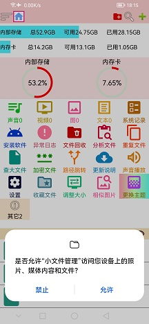
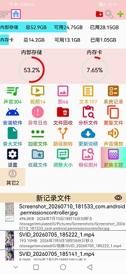
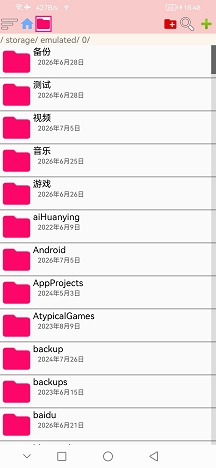
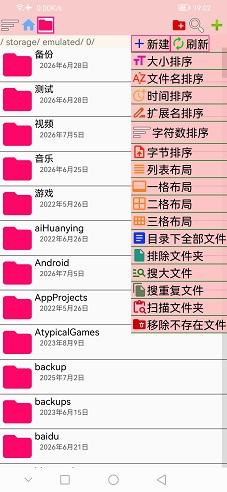
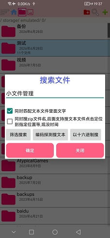
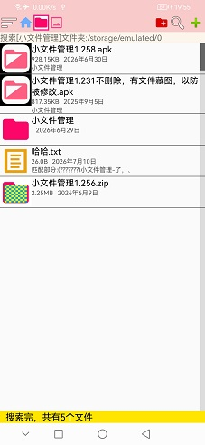

软件全称：小文件管理app
软件包名:com.ljlm.wenjianguanli2
版本：V1.258
第一章 软件背景以及功能介绍
1.背景
安卓手机存储容量越来越大，不仅存储个人的视频图片等文件，还能外接u盘机械盘固态盘等硬盘存储介质，还能用作携带电脑等重要文件。有时还存储者重要的证据文件用于转移到别的地方，用户有时也想把文件临时存放到安全的地方，需要一个能搜文本文件快速整理分类等综合多功能的文件管理软件。
2.简介
小文件管理是个人独立开发的 android 原生软件，单机无联网功能。开发目的是高效处理手机文件。可在 Android
系统的手机、车机、电视、手表等运行，主要用于浏览管理操作设备的文件。解决用户有批量搜索文本文件、无扩展名识别文件文件查重目录分析等需求。
3.目标用户
对手机文件管理有高效处理文件安全设备性能低的又需要功能齐全丰富的软件，这类用户用的 android 系统的硬件性能低，系统自带文件管理不满足需求，需要安全无联网占用极小性能要求低功能又齐全还具备新功能 android
软件。
4.主要功能
(1)主界面能跳转图标大小和设置格子数量，顶部下面显示存储总量、可用个已用的空间多少，根据
文件扩展名分类整理,根据扩展名文件类型分为声音、视频、图片、文字、安装软件等其它扩展名分类，
在分类中显示每个扩展名的文件数量以及占用大小，分类看文件使用情况，然后依次是功能按钮，下面
是显示系统最新的创建的文件。
(2)多格视图浏览目录，多标签页面多窗格多级目录，文件浏览能根据文件名、文件大小、创建时间、
扩展名进行泡洗，每个标签窗口页面都能单独互不干扰进行搜索、移动、复制、拖拽、批量重命名、分
析无扩展名类型、找大文件、查重复文件、目录分析等处理文件。
(3)不止能根据文件名搜索文件，还能搜索文本文件内容，还有其它多参数搜索，能在当前搜索的完
文件下再进行多次搜索。具有一键删除空目录和占用为 0 的文件，删除文件具有回收功能，在 30 天外自
动删除，
(4)除了批量处理文件，在播放视频能截图、分离音频和视频文件；编辑文本文件有撤回重做、替换、
统计字数更改编码，统计字数；浏览图片能缩小放大旋转、裁剪、取色；播放声音文件能显示歌词；能
打开 zip 浏览里面压缩的目录，能在没解压情况下打开文字图片预览，具备 zip 加解压，文件加解密采用
的是异或加密算法；还支持浏览 sqlite 数据库文件
系统软件环境
运行环境：Android 操作系统设备，如手机、电视、车机、手表等
网络环境：无需网络
下载链接：https://wwano.lanzouu.com/iaOKV3vmeh0d
密码:f1gt
5. 优势与创新
(1)软件安装包极小,不到2MB,除了相关联网功能,主要功能涵盖市面上的同类文件管理软件.
(2)从零编写搜文本文件的算法,采用编码探测搜索文本文件,极致的优化,不管文本文件有多少多大都不会闪退.
(3)自研究拖拽文件算法,跨窗口操作处理文件
(4)软件已经公布获得不少好评,至少有十几个用户
第二章 系统运行环境
第三章 系统主要功能（用户）
1、启动app
打开主界面显示存储权限授权，点允许后自动读取系统数据库记录的文件进行分类展示声音、视频、图片、文本、以及按照扩展名分类下面按钮的作用功能都如其名，最下面“最新记录文件”不仅显示系统记录文件，一旦操作其它文件被系统记录时就会刷新显示在最前面，比如下载文件后系统记录立即显示。


2、点击条形或圆环就打开进入手机存储的主目录，点图片等文件名是目录在前面文件名在后面，目录和文件名排序分别是数字-汉字-英文字母-其它符号，点击又上角落弹出菜单，点击新建弹窗显示新建文目录文本文件，点刷新如果无新文件就没作用，各种方式排序一应俱全，排序点两下就倒叙正序，初始显示是列表布局，点布局分别切换宫格列表显示。


点目录下全部文件会扫描全部文件扫描当前以及子目录全部文件不显示目录，点排除文件夹只显示当前目录下文件不显示文件夹。
点上面放大镜图标就弹窗显示要搜索的文件，点击会搜到对应的文件


3、多窗口操作处理文件
左右滑动能浏览另外一个窗口文件，长按一个文件或者目录底部显示操作点复制或移动后显示粘贴按钮，可以返回点击打开目录点击粘贴文件，也可滑动到右边窗口点击粘贴文件。